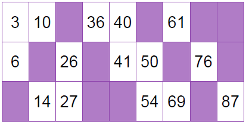

Hello wor… Well, my first hello world post appeared about a year ago, but this site had the same fate as many of my othe side-projects… abandonment.
Until now.
Introduction
Today I’m going to show you how I came up with “an algorithm” to generate random bingo cards and some utility functions to print them on a nice looking (?) .pdf file.
First of all, what type of bingo card I’m referring to? As an Argentine, the only bingo cards I’ve ever heard of are bingo cards like this one

It contains fifteen numbers from 1 to 90 that are divided in three rows and nine columns. The first column contains numbers between 1 and 9, the second column numbers between 10 and 20, and so on until the last column that contains numbers between 80 and 90. The type of bingo that you play with this bingo card is known as the 90-ball bingo game or British bingo. As I said, this is the only version I knew before this project 1 and I think it is the only bingo version you’ll find here in Argentina (I also bet you’ll find some fellow Argentine confirming this a national invention).
So, if you entered this post thinking you’ll find how to print those bingo cards that are popular in places like United States, I’m sorry, this is not for you 2. Fortunately, other people have invented a tool for you even before I wondered how to generate bingo cards. If you are interested, have a look at this package and the Shiny app introduced there.
Now, let’s go back to our business.
Anyone who has gone to one of those events where people gather to play bingo 3 knows that bingo cards don’t usually come separated in individual pieces of paper. Sellers usually have strips of six bingo cards in their hands. In some events, you can buy bingo cards directly. In others, you have to buy the entire strip.
Since this is a 90-ball bingo game and each card contains fifteen numbers, six bingo cards with no repeated numbers is all we need to have all the numbers of the game in a single strip. You see where it is going?. Yes, we won’t generate isolated cards, we’ll generate entire strips. This is how a bingo strip looks like (just imagine them vertically stacked on a single strip)

Valid cards and valid strips
Bingo cards are not just a bunch of numbers thrown at a piece of paper. All valid strips are composed of six valid cards each made of three valid rows. But not any combinations of three valid rows make up a valid card nor any combinations of six valid cards make up a valid strip. What a shame!
But what is a valid row, a valid card, a va… whatever. Let’s just get to the point and list the rules that will govern how we generate bingo cards.
Valid row
We’re going to think that a row is a numeric vector of length nine where some elements are empty and some are filled with numbers.
- Exactly five elements are numbers, and four are empty.
- There can’t be more than two consecutive empty elements, which is equivalent to having at most three consecutive numbers.
Example valid rows


Example invalid rows

Valid card
We can think that a bingo card is a matrix of three rows and nine columns. Each row must be a valid row as specified in the previous point, plus
- No column can be completely empty.
- No column can be completely filled with numbers.
- Numbers are sorted in ascending order within columns.
Example valid card

Valid strip
A valid strip contains six valid cards that satisfy the following conditions
- The first column must have nine numbers and nine empty slots.
- Columns 2 to 8 must have ten numbers and eight empty slots.
- Column 9 must have eleven numbers and seven empty slots.
In total, we have \(6\times3\times9 = 162\) slots in a strip.
90 of them are filled with numbers, 72 are not.
Sample this, sample that, I’ve got no need to compute them all4
One approach to generate bingo cards would be to get all possible combinations of row layouts, bingo layouts, number arrangements, etc. But the number of cards you could generate is huge and the task wouldn’t be easy at all.
The approach used here is one that mixes some simple combinatorics and random sampling. We use permutations to compute all the possible row layouts. Then, we sample rows to create cards and sample cards to create strips5.
First of all, we are going to find valid layouts (i.e. the skeleton of our bingo strips). Once we have them, we are going to fill them with numbers.
Finding valid rows
If we represent empty slots with a 0 and filled slots with a 1, getting all permutations between four 0s and five 1s is as simple as calling combinat::permn(c(rep(0, 4), rep(1, 5))). However, this is not what we want because not all the returned layouts are valid rows. We need to select only those row layouts that are valid in a bingo card.
The following function, find_window(), receives a numeric vector x and looks for find windows of length width where all the elements are equal to what. If such a window is found, the function returns TRUE, otherwise it returns FALSE.
Then we write a function called get_rows() that generates all the possible row layouts and uses find_window() to select the layouts that satisfy our conditions.
get_rows = function() {
# Get all row layouts
rows = combinat::permn(c(rep(0, 4), rep(1, 5)))
# Keep rows with at most two consecutive empty slots
rows = rows[!vapply(rows, find_window, logical(1), 2, 0)]
# Keep rows with at most three consecutive filled slots
rows = rows[!vapply(rows, find_window, logical(1), 3, 1)]
return(rows)
}
Sampling valid cards
We noted that a valid card is made of three valid rows, but not all combinations of three valid rows make up a valid card. What if we sample three row layouts and keep/discard the combination based on whether they make up a valid card or not? We can repeat this until we have some desired number of card layours. The process is as follows
- Let \(N\) be the number of cards we want to generate.
- While the number of cards generated is smaller than \(N\), do:
- Sample three rows and make up the card.
- Count the number of filled slots per column.
- If all the counts are between 1 and 3, keep the card, else discard it.
Once we’re done, we end up with \(N\) bingo card layouts that are valid in terms of our requirements above.
This idea is implemented in a function called get_cards(). It receives the rows we generate with get_rows() and the number of card layouts we want to generate. Finally it returns a list whose elements are vectors of length 3 with the row indexes6.
get_cards = function(rows, cards_n = 2000) {
rows_n = length(rows)
cards = vector("list", cards_n)
attempts = 0
card_idx = 0
while (card_idx < cards_n) {
attempts = attempts + 1
# Sample three rows
row_idxs = sample(rows_n, 3)
mm = matrix(unlist(rows[row_idxs]), ncol = 9, byrow = TRUE)
col_sums = colSums(mm)
# Select valid cards.
# These have between 1 and 3 numbers per column.
if (all(col_sums != 0) && all(col_sums != 3)) {
card_idx = card_idx + 1
cards[[card_idx]] = list(row_idxs, col_sums)
}
# Print message every 1000 attempts
if (attempts %% 1000 == 0) {
message("Attempt ", attempts, " | Cards built:", card_idx, "\n")
}
}
# Check duplicates
dups = duplicated(lapply(cards, `[[`, 1))
message("There are ", sum(dups), " duplicated cards.")
return(cards)
}
Sampling valid strips
This is the much like what we did above, with two differences.
Instead of sampling three row layouts, we sample six card layouts. Instead of checking if the number of filled slots per column are between 1 and 3, we check if they match a number between 9 and 11 specific to each of them.
Then, we have get_strips(). It receives a list called cards where each element contains the three row indexes corresponding to each card layout. rows is a list of row layouts and strips_n controls how many strip layouts we want to generate.
get_strips = function(cards, rows, strips_n = 100) {
valid_counts = c(9, rep(10, 7), 11)
cards_n = length(cards)
strips = vector("list", strips_n)
attempts = 0
strip_idx = 0
while (strip_idx < strips_n) {
attempts = attempts + 1
# Sample 6 cards
cards_idxs = sample(cards_n, 6)
strip = cards[cards_idxs]
# Contains column counts by card
card_counts = matrix(
unlist(lapply(strip, `[[`, 2)),
ncol = 9, byrow = TRUE
)
# Check if strip column counts are valid
if (all(colSums(card_counts) == valid_counts)) {
strip_idx = strip_idx + 1
# Get row indexes contained in the selected card indexes
rows_idxs = unlist(lapply(cards[cards_idxs], `[[`, 1))
strips[[strip_idx]] = matrix(
unlist(rows[rows_idxs]),
ncol = 9, byrow = TRUE
)
}
# Print message every 1000 attempts
if (attempts %% 1000 == 0) {
message("Attempt ", attempts, " | Strips built:", strip_idx, "\n")
}
}
dups = duplicated(strips)
message("There are ", sum(dups), " duplicatd layouts.\n")
return(strips)
}
A last but not least step
I’ve never seen a bingo game where you are given empty layouts and are asked to put numbers yourself. So let’s wrap this up and fill our empty cards!
fill_strips() receives the strip layouts we generated, randomly selects n of them, and, also randomly, fills the slots the cards with numbers. Of course, the first column contains numbers from 1 to 9, the second column contains numbers from 10 to 19… and so on until the last column, that has numbers from 80 to 90.
fill_strips = function(strips, n = 100) {
# Numbers that go in each column
numbers = list(1:9, 10:19, 20:29, 30:39, 40:49, 50:59, 60:69, 70:79, 80:90)
# Row indexes corresponding to each card in the strip
card_rows = list(1:3, 4:6, 7:9, 10:12, 13:15, 16:18)
fill_strip = function(strip) {
# Put numbers in the slots with a 1 (meaning they must contain a number)
strip[strip == 1] = unlist(
# This `sample()` reorders the numbers in each column randomly
mapply(sample, numbers, sapply(numbers, length))
)
for (i in seq_along(card_rows)) {
strip_ = strip[card_rows[[i]], ]
# Numbers in a given column are sorted in ascending order within cards
x = sort(strip_)
strip_[strip_ != 0] = x[x != 0]
strip[card_rows[[i]], ] = strip_
}
return(strip)
}
# Strip layouts can be repeated
strips = lapply(sample(strips, n, replace = TRUE), fill_strip)
message("There are ", sum(duplicated(strips)), " duplicated strips.\n")
return(strips)
}
And we finally get our bingo strips :)
set.seed(0303456)
rows = get_rows()
cards = get_cards(rows, 1000)
strips = get_strips(cards, rows, 20)
strips = fill_strips(strips, 50)
# Output messages have been suppressed
Let’s check some of them
strips[[1]]
[,1] [,2] [,3] [,4] [,5] [,6] [,7] [,8] [,9]
[1,] 0 11 20 0 48 0 0 74 80
[2,] 8 0 0 31 0 51 60 78 0
[3,] 0 19 27 39 0 54 62 0 0
[4,] 1 0 26 0 42 55 0 0 84
[5,] 2 14 0 34 0 0 65 77 0
[6,] 0 17 29 0 43 59 0 0 89
[7,] 0 0 22 33 0 0 64 75 88
[8,] 0 15 0 35 45 0 0 79 90
[9,] 9 0 25 0 49 50 66 0 0
[10,] 3 0 28 30 0 0 61 71 0
[11,] 7 0 0 36 40 58 0 0 81
[12,] 0 10 0 0 44 0 63 76 87
[13,] 0 0 21 37 0 52 68 70 0
[14,] 5 16 0 0 41 0 0 72 82
[15,] 0 18 0 38 47 57 0 0 86
[16,] 0 0 23 0 46 53 0 73 83
[17,] 4 12 0 32 0 0 67 0 85
[18,] 6 13 24 0 0 56 69 0 0strips[[30]]
[,1] [,2] [,3] [,4] [,5] [,6] [,7] [,8] [,9]
[1,] 0 0 25 0 43 50 0 74 80
[2,] 0 16 26 34 0 0 65 79 0
[3,] 6 17 0 38 0 58 0 0 86
[4,] 3 0 27 0 40 51 61 0 0
[5,] 4 0 0 32 49 59 0 0 81
[6,] 0 19 29 35 0 0 68 71 0
[7,] 1 14 0 0 47 0 60 75 0
[8,] 2 0 20 31 0 0 66 0 83
[9,] 0 0 24 0 48 55 0 77 89
[10,] 0 0 28 33 42 0 64 76 0
[11,] 5 12 0 39 0 0 67 0 84
[12,] 9 15 0 0 45 54 0 0 87
[13,] 0 13 21 0 0 52 0 73 85
[14,] 0 18 22 0 44 0 63 78 0
[15,] 8 0 0 37 46 56 0 0 90
[16,] 0 0 23 30 0 53 62 0 82
[17,] 7 10 0 36 0 0 69 70 0
[18,] 0 11 0 0 41 57 0 72 88Are we going to play on R consoles?
All we got so far are matrices that look like a bingo strip. But honestly, without any given context, they just look like a bunch of matrices of the same dimension filled with 0s and other integer numbers. Our last task is to generate a .pdf output where these matrices really look like bingo cards.
In this last part of the post we make use of the grid package. For those who haven’t heard of it, it is the low level plotting library behind ggplot2, for example.
Here we have a little function, make_grid(), that given a number of rows and columns returns the natural parent coordinates of the borders the grid that defines the rectangles within each card.
And now we have the main function used to plot the bingo strips. Since the function is quite large, I prefer to explain how it works with comments in the body.
plot_strips = function(strips, col = "#8e44ad", width_row = 0.925,
width_col = 0.975) {
# `rows` and `cols` are the dimensions of each card
rows = 3
cols = 9
g = make_grid(rows, cols)
# Compute the center of each square in the card grid
centers_rows = g$row[-1] - grid::unit(1 / (rows * 2), "npc")
centers_cols = g$col[-1] - grid::unit(1 / (cols * 2), "npc")
# Sort the centers appropiately
# This is required because of how we loop over the values in each card
x_coords = rep(centers_cols, each = rows)
y_coords = rep(rev(centers_rows), cols)
# Create unique identifiers for the cards
cards_n = paste(paste0("CARD N", intToUtf8(176)),
seq_len(length(strips) * 6))
# Compute the number of sheets we're going to need.
# Each sheet contains two strips
sheets_n = ceiling(length(strips) / 2)
# Initial numbers
card_idx = 0
strip_idx = 0
# Loop over sheets
for (sheet_idx in seq_len(sheets_n)) {
# Each sheet is a grid of 6 rows and 3 columns.
# Columns 1 and 3 are where we place the strips.
# Column 2 just gives vertical separation.
l = grid::grid.layout(nrow = 6, ncol = 3,
widths = c(48.75, 2.5 + 3.75, 48.75))
# Start a new page filled with white
grid::grid.newpage()
grid::grid.rect(gp = grid::gpar(col = NULL, fill = "white"))
vp_mid = grid::viewport(0.5, 0.5, width_row, width_col, layout = l)
grid::pushViewport(vp_mid)
# Loop over columns 1 and 3
for (j in c(1, 3)) {
# Select strip
strip_idx = strip_idx + 1
if (strip_idx > length(strips)) break
strip = strips[[strip_idx]]
# Loop over rows (these rows represent the 6 rows assigned to cards)
for (i in 1L:l$nrow) {
card_idx = card_idx + 1
vp_inner = grid::viewport(layout.pos.row = i, layout.pos.col = j)
grid::pushViewport(vp_inner)
# Add card identification number on top-left
grid::grid.text(
label = cards_n[card_idx],
x = 0,
y = 0.96,
just = "left",
gp = grid::gpar(fontsize = 9)
)
# Draw a grill that separates the slots in the card
vp_mid_inner = grid::viewport(0.5, 0.5, 1, 0.80)
grid::pushViewport(vp_mid_inner)
grid::grid.grill(h = g$row, v = g$col, gp = grid::gpar(col = col))
# Select the numbers that correspond to this card
numbers = as.vector(strip[(3 * i - 2):(3 * i), ])
# Logical vector that indicates which rectangles are filled
# with nunumbers and which rectangles are empty
lgl = ifelse(numbers == 0, FALSE, TRUE)
# Draw the numbers in positions given by the rectangle centers
grid::grid.text(
label = numbers[lgl],
x = x_coords[lgl],
y = y_coords[lgl],
gp = grid::gpar(fontsize = 18)
)
# Fill empty slots with color
grid::grid.rect(
x = x_coords[!lgl],
y = y_coords[!lgl],
height = grid::unit(1 / rows, "npc"),
width = grid::unit(1 / cols, "npc"),
gp = grid::gpar(
col = NA,
fill = farver::encode_colour(farver::decode_colour(col), 0.7)
)
)
# End
grid::popViewport()
grid::popViewport()
}
}
grid::popViewport()
}
}
Now, all we need is to pass the strips generated above to plot_strips() and wrap that call within grDevices::pdf() and grDevices::dev.off().
If it works, you’ll have a 25 pages pdf with bingo cards that look like this one

If you can’t (or just don’t want to) run the code, here you have the generated pdf.
How I dare to call this a project?↩︎
But you should try this bingo, you gonna like it!↩︎
Some are also known as sobremesa↩︎
Haven’t you heard Estallando desde el océano by Sumo?↩︎
If you’ve heard of Sampford’s pps sampling, this is going to be familiar↩︎
I know that returning row indexes is less intuitive than returning card layouts, but this approach requires less memory because it only stores 3 values per card, instead of 18.↩︎